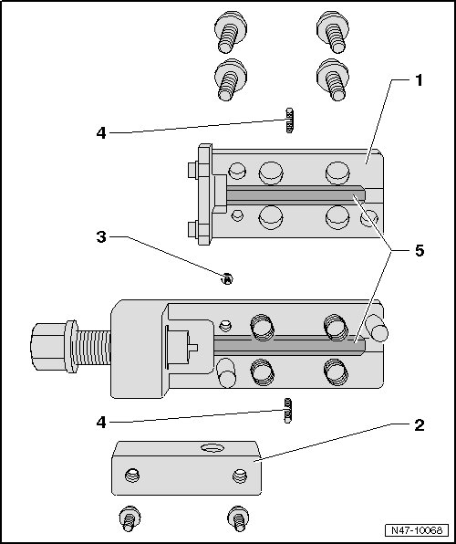
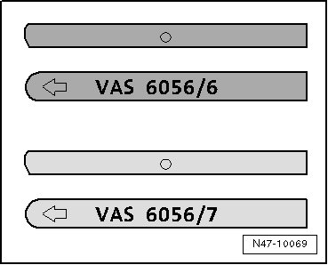

Removal and Replacement
Brake Line Flaring Tool Assembly Overview

1 Upper part of flaring tool
• Remove to change flaring jaws.
2 Hand grip mount
• Must be removed to reach retaining screw for upper part.
3 Retaining screw
• For upper part of flaring tool.
4 Flaring jaws threaded pins
• Center and hold the flaring jaws.
• 2 mm hex socket head.
5 Flaring jaws
• Various
• Assembly instructions, refer to --> [ Flaring Jaws Assembly Instructions ]
Flaring Jaws Assembly Instructions

• VAS 6056/6 (dark) for the black brake lines
• VAS 6056/7 (light) for the green brake lines
• The arrow on the rounded side of the flaring jaws must face toward the edge of the housing and the straight side of the flaring jaws must be installed toward the spindle, otherwise the flared head will not be formed correctly.